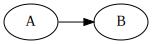

2020-06-29
When I started working on pbb, one of the features I wanted to add and was most excited about was a way to extend Markdown to add code that describes graphs or diagrams and replace it with the actual graph in the rendered output. The corresponding issue is just eight days younger than the whole project.
There are quite a few tools that let you make drawings from text input; I know of
Markdown extensions or Markdown-style markup languages that support diagrams aren’t a new invention either: for example, GitLab Markdown supports Mermaid and PlantUML, and Markdeep has lots of diagrams.
However, the point was in doing it myself, and since I’m most familiar with dot, that’s what I used.
Pandoc lets you manipulate its output by way of piping the intermediate representation of a document (its abstract syntax tree, AST) through a filter. That filter can either manipulate a JSON representation of the AST, or it can use Lua to to manipulate it.
JSON filters are apparently best written in Haskell, but there are libraries in other languages as well. I went with Lua filters instead: I always wanted to learn a bit of Lua, and the interpreter is built right into pandoc. They’re also faster, according to the docs.
The documentation is excellent, and after a Lua crash course, I was ready write my filter. There is a GitHub repository with a collection of pandoc Lua filters, which even includes a diagram generator—pretty much a superset of what I wanted to build. I definitely had a few closer looks at it whenever I got stuck.
The main difference is probably that the example diagram generator
uses the “media
bag” for images, whereas I write them directly to the filesystem.
Using the media bag requires the --extract-media
option, and that messes with the
relative paths of all images, which I wanted to avoid.
The final
product is a filter that checks for each code block if it has class
dot, and if so, the code is piped to dot and the block then
replaced with the generated graph. Like this:
```dot
digraph G {
rankdir = "LR"
A -> B
}
```produces
To get a caption (and an HTML <figure>), the
property can be added:
``` {.dot caption="A caption!"}
digraph G {
rankdir = "LR"
A -> B
}
```resulting in
And finally, to get the dot description as HTML comments next to the
figure (for, I don’t know, the people who want to recreate that great
graph themselves), a special class includeSource can be
added:
``` {.dot .includeSource caption="A caption!"}
digraph G {
rankdir = "LR"
A -> B
}
```for which the graph looks the same:
but the HTML source now includes
<!--
digraph G {
rankdir = "LR"
A -> B
}
-->
<figure>
<img src="diagrams/8728a4b.svg" alt="" /><figcaption>A caption!</figcaption>
</figure>The image file, by the way, has a prefix of its hash as the name, so all three graphs here generated just a single file as they’re identical.